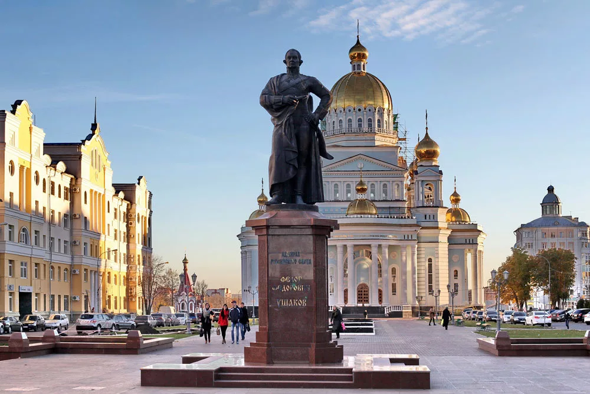

Ушоков
Памятник адмиралу Российского флота Ф. Ф. Ушакову Бронзовый Монумент установлен в центре Саранска на Соборной площади, перед городским кафедральным собором, в 2006 году. Авторами монумента являются мордовский скульптор Н.Филатов и мордовский архитектор С.Ходнев. Федор Федорович Ушаков (1745–1817) – адмирал, герой многочисленных морских сражений, искусный флотоводец, не знавший ни одного поражения, не потерявший ни одного корабля, не сдавший врагу в плен ни одного своего матроса.
Имя адмирала тесно связано с Мордовией. Последние годы жизни великий флотоводец провел на мордовской земле в имении Алексеевка. Его мощи покоятся в Санаксарском монастыре Темниковского района республики. После его причисления к лику святых Русской православной церковью в 2001 году, он считается святым покровителем Мордовии. Памятник Федору Федоровичу Ушакову представляет собой бронзовое изваяние фигуры адмирала – высотой 4 метра, установленное на гранитном постаменте. Адмирал изображен без головного убора, в правой руке Ушакова скульптор изобразил подзорную трубу, а левая рука флотоводца тянется к шпаге.
Он облачен в адмиралтейский костюм и ботфорты, на кителе виднеются многочисленные медали и ордена. Сооружение памятника стало возможным благодаря государственной поддержке и пожертвованиям верующих Русской православной церкви.